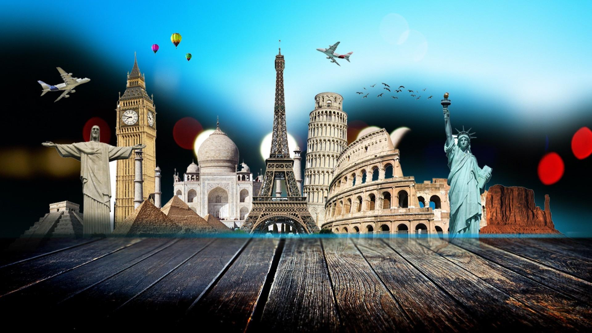

Don't Miss any important Tourist places.Here there so many Beautiful Places that you can Visit!
"Good wishes on the Ocassion"
"Best Wishes for the Success of the Event"
"I convey my heartiest greetings to the organizers on the occasion and wish the programme success"
"I convey my good wishes to the organizers and Tourists of the programme & wish the confluence a great success"
Tourism is a concern with pleasure, holidays, traveling and moving, departing or arriving somewhere. These are the source of motivations that make people leave their “normal” place of work and residence for short-term or long-term temporary visits to “other” Places. Tourism is important to local economies around the world and the people living in them.
Travel is known to help broaden a person’s way of thinking. Humans are curious creatures by nature. We are always looking for new places to explore. Tourism provides an escape and a way of experiencing the world. Travel also spreads cultural understanding, acceptance, and education.
Devi |+91 9876581249 |devimk@gmail.com